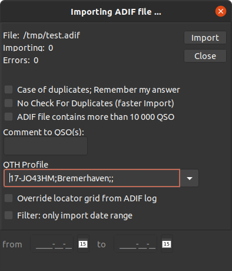

ADIF import
The main purpose is to add QSO records from other logging and/or contesting programs.
You may need it if you migrate from another logger or if you are adding contacts made
in a contest (any modern contesting program has the ADIF export facility, some older
programs may need a third party conversion utility).
Go to QSO list (Ctrl+O on the main logging screen or File -> Show QSO list from the menu).

From the menu
here choose File -> Import -> ADIF.
Click on 'ADIF' and an 'Open file' dialog appears.

Navigate to the file you want to import and
click 'Open'. You will see a new dialog, click the 'Import' button here. You can also
add a QTH profile and a note ('Remarks:') which will appear on any imported QSO record.
Using this option, a portable, mobile or QRP operation can be clearly marked.

If you import a huge file, you will see a progress bar, however import of a small file
is so fast that you never notice the progress indicator.

The previous window now shows the import completion, the number of imported records and
the number of errors. If the ADIF file contains incorrect entries, they will be stored
separately in the file
errors.adi located in the 'log_data' subfolder.
You can fix the errors manually and import again.

Duplicate entries (contacts already in the log) are indicated with a separate dialog
allowing you to exclude or include these records.

ADIF export
Go to QSO list using Ctrl-O or choose the QSO list from the upper menu - item 'File'.
From the QSO list, choose 'Export' in the menu - item 'File'.

Choose 'ADIF'. An usual a dialog appears (depending on the desktop used). Choose a
location and file name.
HTML export
The same as above, only difference is to choose the 'HTML' option.
How to update Country files:
- Unpack and copy all the files into the /ctyfiles folder in your CQRLOG main folder.
The purpose of this folder is to store these files only, it is not bound to CQRLOG and
does not affect its function.
- Start CQRLOG and select the 'Show QSO list' from the 'File' item in the main menu.
You can also get there using shortcut Ctrl-O.
- If you are already in the QSO list, go to menu. Click the 'File' item, then the 'Import'
option. Choose the DXCC data option, located at lowest position. A dialog appears,
navigate to your /ctyfiles folder. Click the 'Open' button. All files are read and if
the import completes, a small window with the message 'Import complete. Please restart
program' appears. Click the OK button and quit CQRLOG.
- Restart CQRLOG. The update is finished.
 |
Note: While opening your new country files
[see 3.], you dont need to open a particular file. The 'Open' button starts a procedure
which reads ALL files in the /ctyfiles folder.
|
 |
WARNING! Don't attempt to create your own
country files. This can result in the program crashing or incorrect statistics. If you
find an incorrectly resolved station (no matter if current log or an old record), send
a note directly to me: martin@ok1rr.com. ALWAYS
replace all files in the /ctyfiles folder! If you leave an old file or update only a single
file from the new version, the resulting tables will become out-of-sync which leads to
incorrect statistics. Also, the logger may not work properly.
|
|
WARNING! If you update your country files or
upgrade the CQRLOG version, always perform the 'Rebuild DXCC statistics'
which is accessible from the QSO list screen.
|
Some users have reported that their DXCC statistics became 'out of sync' and the
actual DXCC scoring does not match the results reported by CQRLOG.
Remember that a regular rebuild of your DXCC statistics is a matter of importance.
Rebuild if you upgrade country files, rebuild also if you upgrade the program version!
QSL Manager Database update
Since version 0.8.0 CQRLOG uses its own QSL Manager database in a very simple, plain
text format (CSV, semicolon separated). The update is very simple. The automated update
checks the availability of a new version, downloads and unpacks the tar.gz file if
available. The new version must be imported - go to QSO list (Ctrl+O or from menu
File -> Show QSO list) and choose the
File -> Import -> Import
qsl managers database.
A manual update is also possible if you download a recent version from the CQRLOG site
http://www.cqrlog.com.

The QSL Manager database format is as follows:
call;qsl_manager;publishing_date
Example:
3D2BV;JA1PBV;2008-01
You can maintain your own records but we carefully maintain this database with verified
records from reliable sources (DX Bulletins). The database is updated monthly and the
covered timespan of QSL Managers is limited to 10 years after publishing date. After
this time, the expired records will be removed and stored in another file (archive)
which will be available on the CQRLOG site
http://www.cqrlog.com.
|
|
Note: Because the HamQTH.com/QRZ.COM entries very often
contain details useful for direct lookup but not suitable to print on QSL labels,
choose the option 'Ignore HamQTH.com/QRZ.COM qsl info' in the Preferences ->
New QSO dialog.
|
If a station has more than one QSL Manager, click the small button to the left of the
QSL VIA field.

A popup window of selections appears:

Navigate to the appropriate QSL manager, use the publishing date column or verify the
QSL manager from another source. This ensures that the QSL label will contain the
proper QSL manager.
Statistics rebuilding

The only way to rebuild your statistics is
from the QSO list.
The 'Statistics' menu item has the 'Rebuild DXCC statistics' option (the similar option
on the logging screen does NOT have a 'Rebuild' option).
|
WARNING! The statistics rebuilding takes a long
time if your log contains tens of thousands records!
|
A warning appears before the rebuilding process. If you answer 'Yes', be prepared for a
long wait.

Membership databases
CQRLOG supports online tracking of up to 5 memberships simultaneously. The membership
databases can also be used for filter creation, along with a date span (from-to).
The tracking and filtering feature is not limited to membership, you can create your
own databases using lists of your particular interests (short-term awards, local
groups etc.). The databases have a pure text format with data columns separated by
a semicolon ';'.
The default installation contains data of some 57 clubs: AFM, AGCW, ARKTIKA, A1-CLUB,
A1-OP, CAV, CCT, CFO, CFT, CONVENIAT, CTC, CWJF, CWSP, DIG, DTC, EHSC, EPC, FFR, FIRAC,
FISTS, FMC, FOC, GACW, GQRPC, HACWG, HHC, HH, HSC, HTC, JAIG, MARCONISTA, MCL, MFCA,
MF, OKDXC, OKDXF, OTC-SARA, PRC, PRL, QCWA, RAFARS, RIA, RNARS, RRDXA, RTC, SHSC, SKCC,
SPAR, SPDXC, TEN-TEN, TFC, UDXC, UFT, VHSC, VRK, WAP, 070-CLUB, 9ACWG.
You can go to
/home/~/.config/cqrlog/members
(the tilde ~ represents the name of your personal subdirectory within the 'home' folder).
Any membership file also contains a header consisting of two lines:
HSC
High Speed Club
where the first line represents the
short name of the club and the second
line is the long
club name. Both names must be in the header on separate
lines. The first line must be the same as the filename without suffix, ie. the HSC
membership list
must be
hsc.txt
The mandatory suffix is
.txt and the filename must be in
lowercase.
You can examine the syntax which is more descriptive than this short example,
however there are basically 3 types of membership list files:
1. Simple list of call signs. It does not contain any membership
number or date limits. Syntax:
W5LGY
W5LJT
W5LKL
W5LP
ie. a
single call per line.
2. List of call signs with membership numbers. Syntax:
DL5JAN;4603
DL5JBM;4746
DL5JBN;4642
DL5JBW;5740
ie. a
single call and membership number per line. The call and the
membership number are separated by a semicolon ';'.
3. List of call signs with membership numbers and date limits.Used
for short term awards or time span limited memberships. Syntax:
6O2NG;533;1957-04;2005-03
6Y5SR;868;1966-03;1982-07
6Y5XG;331;1951-05;-
7J1AEF;1297;1976-06;-
ie. a
single call, membership number and datelimits from-to, separated by
a semicolon ';', per line. See above the two optins: 6O2NG with membership number 533 was
a member of the club from April, 1957 to March, 2005. 6Y5XG with number 331 started his
membership May, 1951 and is still a member. The dash instead of a date (separated from
the begin date by a semicolon) denotes that the membership is still active. A dash can
be used
only in the field for 'to'.
|
WARNING! You must keep lists of your particular
interests updated yourself! It is impossible for the authors to keep all these tables up-to-date,
however if you update a list and would like to share it with others, you are welcome!
|
Log backup
Your log is in the
/home/~/.config/cqrlog/
(the tilde ~ represents the name of your personal subdirectory within the 'home' folder).
Backup this directory, however it is big. If you want to save space, export your log into
an ADIF file which is about half the size of the database directory. ADIF is also version
independent. Zipped or tared ADIF files also have a reasonable size if your log
contains several 100 000 records.